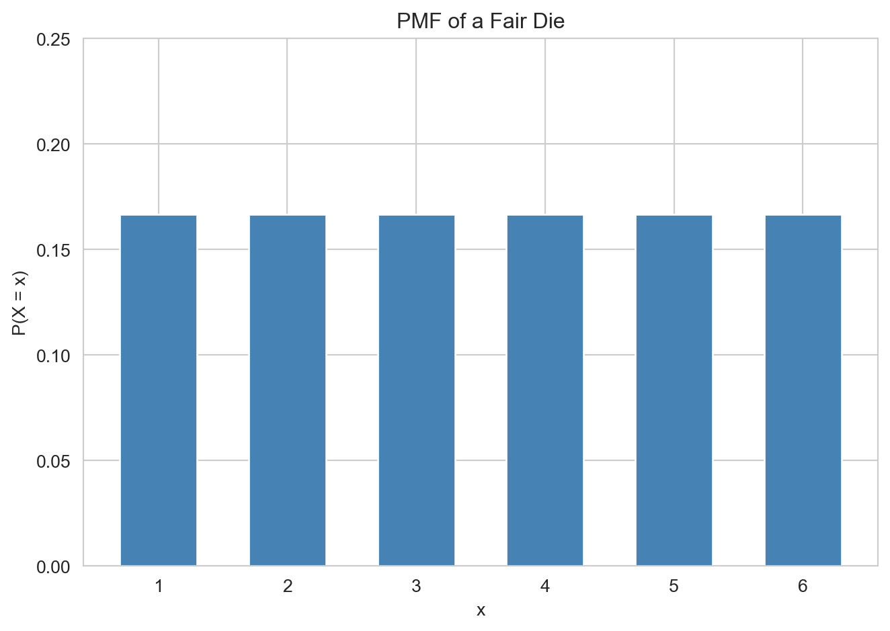
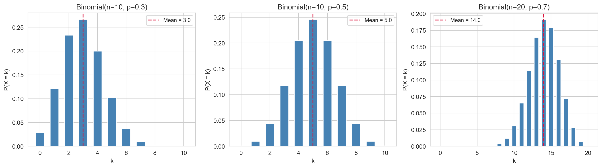
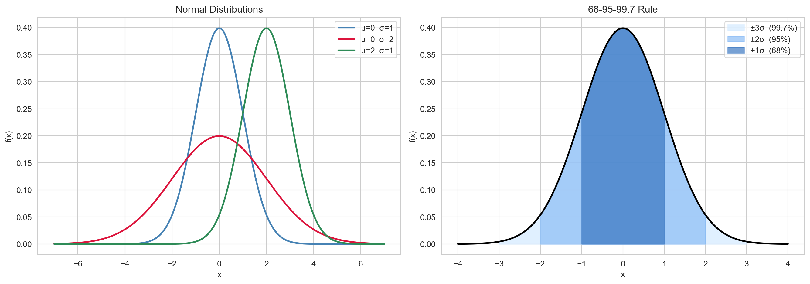
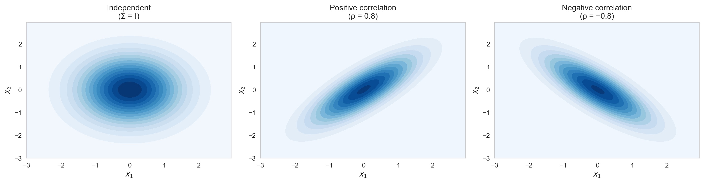

Libraries and Styling
import numpy as np
import matplotlib.pyplot as plt
import seaborn as sns
from scipy import stats
from scipy.stats import binom, norm, multivariate_normal
sns.set_style('whitegrid')
sns.set_palette('Set2')John Robin Inston
May 14, 2026
May 22, 2026
A model is a simplified, mathematical representation of a real-world system or process. It captures the essential features of the system while abstracting away unnecessary detail.
Models appear throughout data science in many forms: a regression equation predicting house prices from square footage, a probability distribution describing the heights of adult males, a decision tree classifying emails as spam, or a differential equation modelling the spread of a disease.
A fundamental trade-off is always present: all models are wrong, but some are useful (Box, 1979). A good model is simple enough to understand and accurate enough to be informative.
We build models to serve several distinct purposes:
Models fall into four broad categories that differ in how they treat randomness and how their parameters are determined.
Deterministic models produce the same output for the same input with no randomness.
A deterministic model produces the same output for the same input — there is no randomness in the model.
Classic examples include Newton’s second law \(F = ma\) and compound interest \(A = P(1 + r)^t\). The key limitation is that real-world data always contains noise and variability, which deterministic models cannot represent or quantify.
Probabilistic models introduce randomness explicitly.
A probabilistic model introduces randomness explicitly. Outputs are described by probability distributions rather than fixed values.
For example, the number of heads in 10 coin flips follows \(X \sim \text{Binomial}(10, 0.5)\), measurement error is often modelled as \(\varepsilon \sim \text{Normal}(0, \sigma^2)\), and time between arrivals as \(T \sim \text{Exponential}(\lambda)\). The key advantage is that probabilistic models let us quantify uncertainty in conclusions and predictions.
Statistical models are probabilistic models whose parameters are unknown and estimated from data.
A statistical model is a probabilistic model whose parameters are unknown and estimated from data. The process of finding parameter values that best explain the data is called model fitting.
Simple linear regression is a canonical example: we assume \(Y_i = \beta_0 + \beta_1 x_i + \varepsilon_i\) with \(\varepsilon_i \sim \text{Normal}(0, \sigma^2)\). The parameters \(\beta_0, \beta_1, \sigma^2\) are unknown and estimated from data. Statistical models support estimation, uncertainty quantification, hypothesis testing, and prediction.
Machine learning models learn patterns directly from data using optimisation algorithms.
A machine learning model learns patterns directly from data using optimization algorithms. These models are often highly flexible and prioritise predictive performance over interpretability.
Examples include decision trees, random forests, gradient boosting, and neural networks (supervised), as well as \(k\)-means clustering and PCA (unsupervised). The table below summarises the key differences between statistical and machine learning models:
| Statistical Models | Machine Learning | |
|---|---|---|
| Primary goal | Inference & understanding | Prediction |
| Interpretability | High | Often low |
| Assumptions | Explicit | Implicit |
| Sample size | Can work with small \(n\) | Often requires large \(n\) |
| Uncertainty | Quantified | Often not |
Statistical and machine learning models are grounded in probability theory. Probability provides the mathematical language to describe uncertainty and variability in data, define distributions over possible outcomes, and reason formally about relationships between variables.
The sample space \(\Omega\) is the set of all possible outcomes of a random experiment. An event is any subset \(A \subseteq \Omega\) (i.e. a collection of outcomes).
A probability measure \(\mathbb{P}\) assigns a number in \([0, 1]\) to each event and satisfies the Kolmogorov Axioms:
These axioms form the formal foundation of probability theory, though in this course you will not need to write proofs from them.
A random variable \(X\) is a function \(X \colon \Omega \to \mathbb{R}\) that maps each outcome in the sample space to a real number.
Random variables are classified as either discrete or continuous:
Random variables give us a unified, numerical framework for describing uncertainty — regardless of what the underlying sample space looks like.
For discrete random variables, the distribution is described by a probability mass function (PMF).
The PMF of a discrete random variable \(X\) is: \[p(x) = \mathbb{P}(X = x), \quad \text{for all } x \text{ in the support of } X.\]
The PMF must satisfy two properties: \(0 \leq p(x) \leq 1\) for all \(x\), and \(\sum_x p(x) = 1\).
Example: Fair Die. Define \(X\) as the result of throwing a fair 6-sided die. The support of \(X\) is \(\{1, \ldots, 6\}\) and all values are equally likely, so the PMF is: \[p(x) = \frac{1}{6}, \quad \forall x \in \{1, \ldots, 6\}.\] This is called a discrete uniform random variable.

For continuous random variables, the distribution is described by a probability density function (PDF).
The PDF of a continuous random variable \(X\) is a function \(f(x) \geq 0\) such that: \[P(a \leq X \leq b) = \int_a^b f(x)\, dx.\]
The PDF must satisfy: \(f(x) \geq 0\) for all \(x\), and \(\int_{-\infty}^{\infty} f(x)\, dx = 1\). Crucially, for a continuous random variable \(P(X = x) = 0\) for any single point \(x\) — probabilities are areas under the curve, not heights.
Example: Bus waiting times. Consider a bus that arrives every 30 minutes. A person arrives at the stop not knowing the time, so their waiting time \(Y\) is equally likely to be anywhere in \([0, 30]\). The PDF is: \[f(x) = \frac{1}{30}, \quad \forall x \in [0, 30].\] This is a continuous uniform distribution.
The CDF of a random variable \(X\) is: \[F(x) = P(X \leq x), \quad x \in \mathbb{R}.\]
The CDF is non-decreasing: \(x_1 \leq x_2 \Rightarrow F(x_1) \leq F(x_2)\). It satisfies \(\lim_{x \to -\infty} F(x) = 0\) and \(\lim_{x \to \infty} F(x) = 1\). For a continuous random variable, \(f(x) = F'(x)\) — the PDF is the derivative of the CDF. A useful identity for computing probabilities is: \[P(a < X \leq b) = F(b) - F(a).\]
The expectation (or mean) of a random variable \(X\) is: \[\mathbb{E}[X] = \begin{cases} \displaystyle\sum_x x \cdot p(x) & \text{(discrete)} \\[6pt] \displaystyle\int_{-\infty}^{\infty} x \cdot f(x)\, dx & \text{(continuous).} \end{cases}\]
The expectation is the long-run average value of \(X\) over many independent repetitions of the experiment. A key property is linearity of expectation: for constants \(a, b\) and random variables \(X, Y\), \[\mathbb{E}[aX + bY] = a\,\mathbb{E}[X] + b\,\mathbb{E}[Y].\] This holds regardless of whether \(X\) and \(Y\) are independent, and is particularly useful in linear regression.
The variance of a random variable \(X\) is: \[\text{Var}(X) = \mathbb{E}\!\left[(X - \mathbb{E}[X])^2\right] = \mathbb{E}[X^2] - \bigl(\mathbb{E}[X]\bigr)^2.\]
The standard deviation is \(\text{SD}(X) = \sqrt{\text{Var}(X)}\), which has the same units as \(X\). Key properties of variance are:
The conditional probability of event \(A\) given event \(B\) (with \(P(B) > 0\)) is: \[P(A \mid B) = \frac{P(A \cap B)}{P(B)}.\]
\(P(A \mid B)\) is the probability of \(A\) once we know that \(B\) has occurred — we restrict attention to the sub-universe where \(B\) is true. From the definition it follows immediately that: \[P(A \cap B) = P(A \mid B)\, P(B) = P(B \mid A)\, P(A),\] which is called the multiplication rule.
Bayes’ theorem allows us to invert conditional probabilities — computing \(P(A \mid B)\) from \(P(B \mid A)\).
\[P(A \mid B) = \frac{P(B \mid A)\, P(A)}{P(B)}.\]
In the language of statistical modelling:
Bayes’ theorem is the foundation of Bayesian statistics and many probabilistic classifiers (e.g. Naive Bayes). It formalises the idea of learning from data: updating beliefs in light of evidence.
Events \(A\) and \(B\) are independent if: \[P(A \cap B) = P(A)\, P(B), \quad \text{equivalently} \quad P(A \mid B) = P(A).\] Random variables \(X\) and \(Y\) are independent if knowing the value of one provides no information about the other.
An important distinction: independence implies zero covariance (uncorrelatedness), but the converse is not generally true. Two variables can have correlation \(\approx 0\) yet exhibit a strong non-linear relationship — a point encountered earlier in EDA.
The conditional expectation of \(Y\) given \(X = x\) is: \[\mathbb{E}[Y \mid X = x] = \begin{cases} \displaystyle\sum_y y \cdot P(Y = y \mid X = x) & \text{(discrete)} \\[6pt] \displaystyle\int_{-\infty}^{\infty} y \cdot f_{Y \mid X}(y \mid x)\, dy & \text{(continuous).} \end{cases}\]
\(\mathbb{E}[Y \mid X]\) is itself a random variable — a function of \(X\). In regression, \(\mathbb{E}[Y \mid X = x]\) is the regression function: the best prediction of \(Y\) given \(X = x\).
Two key properties of conditional expectation are:
The joint distribution of \((X, Y)\) describes the probability of all pairs of outcomes simultaneously.
The marginal distribution of \(X\) is obtained by integrating (or summing) out \(Y\):
The conditional distribution of \(Y\) given \(X = x\) is: \[f_{Y \mid X}(y \mid x) = \frac{f(x, y)}{f_X(x)}, \quad f_X(x) > 0.\]
The Binomial distribution models the number of successes in a fixed number of independent binary trials.
If \(X\) counts the number of successes in \(n\) independent Bernoulli trials, each with success probability \(p\), then \(X \sim \text{Binomial}(n, p)\) with PMF: \[P(X = k) = \binom{n}{k} p^k (1-p)^{n-k}, \quad k = 0, 1, \ldots, n.\]
Its mean and variance are: \[\mathbb{E}[X] = np, \qquad \text{Var}(X) = np(1-p).\]
The Binomial distribution arises naturally in data science for modelling click-through rates, defect counts, and disease incidence. It is also the foundation for logistic regression, which models binary outcomes.
fig, axes = plt.subplots(1, 3, figsize=(14, 4), sharey=False)
params = [(10, 0.3), (10, 0.5), (20, 0.7)]
for ax, (n, p) in zip(axes, params):
k = np.arange(0, n + 1)
ax.bar(k, binom.pmf(k, n, p), color='steelblue', edgecolor='white', width=0.6)
ax.axvline(n * p, color='crimson', linestyle='--', label=f'Mean = {n*p:.1f}')
ax.set_title(f'Binomial(n={n}, p={p})')
ax.set_xlabel('k')
ax.set_ylabel('P(X = k)')
ax.legend(fontsize=9)
plt.tight_layout()
plt.show()
The Gaussian distribution is the most important continuous distribution in statistics.
A random variable \(X \sim \text{Normal}(\mu, \sigma^2)\) has PDF: \[f(x) = \frac{1}{\sqrt{2\pi\sigma^2}} \exp\!\left(-\frac{(x-\mu)^2}{2\sigma^2}\right), \quad x \in \mathbb{R}.\]
Its mean and variance are simply: \[\mathbb{E}[X] = \mu, \qquad \text{Var}(X) = \sigma^2.\]
The Gaussian distribution is ubiquitous for two reasons. First, the Central Limit Theorem states that the standardised sum of many i.i.d. random variables converges in distribution to \(\text{Normal}(0,1)\). Second, many natural phenomena — heights, measurement errors, noise — are approximately Gaussian.
If \(X \sim \text{Normal}(\mu, \sigma^2)\), then \(Z = (X - \mu)/\sigma \sim \text{Normal}(0, 1)\) is the standard normal. The 68–95–99.7 rule provides useful probability benchmarks:
This rule also connects back to EDA: a distribution is symmetric and mesokurtic (skewness \(= 0\), kurtosis \(= 3\)) when it is Gaussian.
fig, axes = plt.subplots(1, 2, figsize=(14, 5))
# Left: varying parameters
x = np.linspace(-7, 7, 500)
for mu, sigma, color, label in [(0, 1, 'steelblue', 'μ=0, σ=1'),
(0, 2, 'crimson', 'μ=0, σ=2'),
(2, 1, 'seagreen', 'μ=2, σ=1')]:
axes[0].plot(x, norm.pdf(x, mu, sigma), color=color, lw=2, label=label)
axes[0].set_title('Normal Distributions')
axes[0].set_xlabel('x')
axes[0].set_ylabel('f(x)')
axes[0].legend()
# Right: 68-95-99.7 rule
x2 = np.linspace(-4, 4, 500)
axes[1].plot(x2, norm.pdf(x2), 'k', lw=2)
for n_sig, color, label in [(3, '#d0e8ff', '±3σ (99.7%)'),
(2, '#85b9f5', '±2σ (95%)'),
(1, '#2f6fbd', '±1σ (68%)')]:
xf = np.linspace(-n_sig, n_sig, 300)
axes[1].fill_between(xf, norm.pdf(xf), alpha=0.65, color=color, label=label)
axes[1].set_title('68-95-99.7 Rule')
axes[1].set_xlabel('x')
axes[1].set_ylabel('f(x)')
axes[1].legend()
plt.tight_layout()
plt.show()
The Multivariate Gaussian extends the Normal distribution to multiple dimensions and is essential for multivariate modelling.
A random vector \(\mathbf{X} = (X_1, \ldots, X_d)^\top \sim \text{Normal}(\boldsymbol{\mu}, \boldsymbol{\Sigma})\) has PDF: \[f(\mathbf{x}) = \frac{1}{(2\pi)^{d/2} |\boldsymbol{\Sigma}|^{1/2}} \exp\!\left(-\frac{1}{2}(\mathbf{x} - \boldsymbol{\mu})^\top \boldsymbol{\Sigma}^{-1} (\mathbf{x} - \boldsymbol{\mu})\right),\] where \(\boldsymbol{\mu} \in \mathbb{R}^d\) is the mean vector and \(\boldsymbol{\Sigma} \in \mathbb{R}^{d \times d}\) is the covariance matrix (symmetric, positive semi-definite).
The parameters capture:
The shape of the density contours reflects the covariance structure: circular for independent components and elliptical for correlated components.
fig, axes = plt.subplots(1, 3, figsize=(15, 4))
configs = [
{'title': 'Independent\n(Σ = I)', 'cov': [[1, 0 ], [0, 1 ]]},
{'title': 'Positive correlation\n(ρ = 0.8)', 'cov': [[1, 0.8 ], [0.8, 1 ]]},
{'title': 'Negative correlation\n(ρ = −0.8)', 'cov': [[1, -0.8 ], [-0.8, 1 ]]},
]
x1, x2 = np.mgrid[-3:3:0.05, -3:3:0.05]
pos = np.dstack((x1, x2))
for ax, cfg in zip(axes, configs):
rv = multivariate_normal(mean=[0, 0], cov=cfg['cov'])
ax.contourf(x1, x2, rv.pdf(pos), levels=15, cmap='Blues')
ax.set_title(cfg['title'])
ax.set_xlabel('$X_1$')
ax.set_ylabel('$X_2$')
plt.tight_layout()
plt.show()
The Multivariate Gaussian is the building block of multivariate regression, Gaussian processes, and PCA.
Beyond the Binomial and Gaussian, several other distributions appear frequently in data science.
Discrete distributions:
Continuous distributions:
The table below summarises the key probability concepts and their roles in statistical modelling.
| Concept | Formula | Role in Modelling |
|---|---|---|
| PMF / PDF | \(p(x)\), \(f(x)\) | Describes the distribution of \(X\) |
| CDF | \(F(x) = P(X \leq x)\) | Computes probabilities |
| Expectation | \(\mathbb{E}[X]\) | Population mean |
| Variance | \(\text{Var}(X) = \mathbb{E}[(X-\mathbb{E}X)^2]\) | Population spread |
| Conditional Prob. | \(P(A \mid B) = P(A\cap B)/P(B)\) | Updating beliefs |
| Conditional Exp. | \(\mathbb{E}[Y \mid X]\) | Regression function |
| Joint / Marginal | \(f(x,y)\), \(f_X(x)\) | Multivariate models |